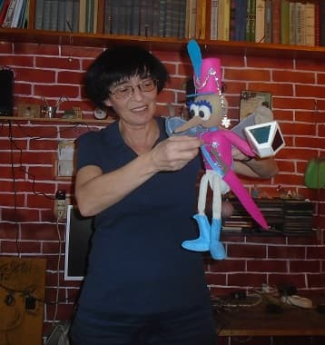
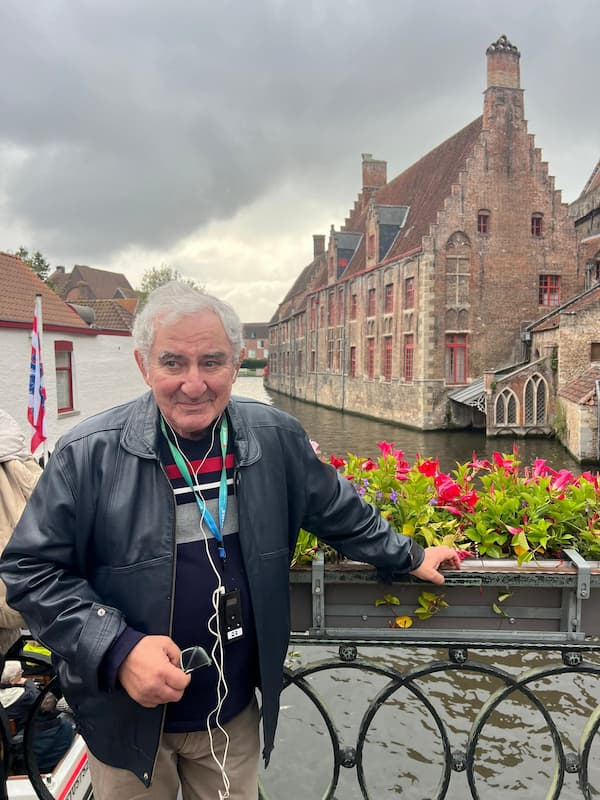

Дорогие друзья! Мы рады сообщить о начале работы над новым литературным проектом. В нашей типографии стартует подготовка к изданию дебютной книги молодой петербургской писательницы Любови Птакул «Белый клоун».
Особенность издания заключается в его универсальном формате. Книга, объединяющая стихи, загадки и сказки, создана специально для семейного чтения. Автор адресует своё творение мамам и папам, бабушкам и дедушкам, которые смогут вместе с детьми и внуками погрузиться в мир увлекательных историй.
Творческий процесс выходит на новый этап: к работе над книгой подключился талантливый художник. Сейчас ведутся активные переговоры об иллюстрировании издания, что сделает его по-настоящему красочным и запоминающимся.
Значимое посвящение придаёт книге особый смысл. Автор посвящает своё творение Михаилу Семёновичу Казинику — Учителю и Другу, выражая ему бесконечную любовь и благодарность.

Михаил Семёнович Казиник родился 13 ноября 1951 года в Ленинграде в семье инженера и юрисконсульта. Уже в раннем детстве проявились его удивительные способности: в четыре года он артистично читал наизусть произведения Маршака, Чуковского, Пушкина и даже сонеты Шекспира.
С шести лет начал заниматься музыкой, поступив в Детскую музыкальную школу №1 по классу скрипки. Его творческий путь продолжился в Витебском музыкальном училище и Белорусской государственной консерватории, которую он окончил в 1975 году.
Профессиональная деятельность Михаила Семёновича связана с музыкой и просвещением. Он работал солистом и лектором-музыковедом в Белорусской государственной филармонии, проводил лекции-концерты по всему СССР. После переезда в Швецию стал известным деятелем культуры международного масштаба.
Особое место в его деятельности занимают просветительские проекты. Михаил Семёнович регулярно выступает с лекциями и концертами в разных странах мира, рассказывая об истории искусства и классической музыке. Он вёл популярные телепередачи, был автором и ведущим радиопрограмм, участвовал в крупных культурных проектах.
Особую ценность изданию придаёт высокая оценка Михаила Семёновича Казиника, который поделился своими впечатлениями о книге:
«Огромное впечатление оставляют сказки. То, что пишет Любовь Птакул, — мечта любого писателя: самые-самые детские сказки, но одновременно и самые взрослые. Это то, чего добились немногие. С одной стороны, вроде, настоящие детские, с другой — философские сказки. Это то, чего достиг Антуан де Сент-Экзюпери в гениальной сказке «Маленький принц», она же — трактат по философии экзистенциализма. Она же — книга, наполненная добрым (и печальным) юмором или опасением за судьбу нашей Планеты.
Возьмём первую сказку из цикла «Сказки рождественской ёлки». Всё начинается, как и положено в рождественской сказке: старая, добрая, но одинокая фея. Игрушки на маленькой ёлочке рассказывают фее сказки. И каждая сказка — подлинный подарок, с добрым и тёплым чувством юмора, любви и… аллюзиями на историю глупой части человечества. Той, для которой главное не любовь, а власть. И победу двоих, для которых превыше любви нет ничего!
Сказка написана с таким теплом и остроумием, что, читая, забываешь о том, что её герои — мыши, целое королевство мышей. Нет! Это совсем не гофмановский «Щелкунчик». Это добрая сказка о Любви, о нравственном выборе Принца, и, как у Гофмана, о победе любви над злом.
Если первая сказка вызывает некоторые ассоциации со сказкой о Мышином короле Гофмана, то вторая обращается к древней истории Дракона. Последняя из историй из 20 века. Но в основе её лежит не рассказ о рыцаре и девушке — пище для дракона, а мысль о силе музыки спасительных колоколов, о музыке, победившей дракона. Десять девушек превратились в колокола. И звучание этих колоколов победило Дракона. Он «взорвался от злости».
Все остальные сказки не менее прекрасны. Они о любви, о победе Добра, Мастерства, Света! Я очень рад за людей (детей и взрослых), которые прочтут эти сказки. Мудрые станут ещё мудрее, а добрые — ещё добрее».
Следите за нашими новостями — мы обязательно сообщим о выходе книги «Белый клоун» и представим первые иллюстрации будущего издания. Это будет настоящее событие для всех любителей качественной литературы!
ИПК «Лазурь» продолжает радовать читателей интересными проектами, сохраняя традиции качественного книгопечатания и открывая новые имена в литературе.